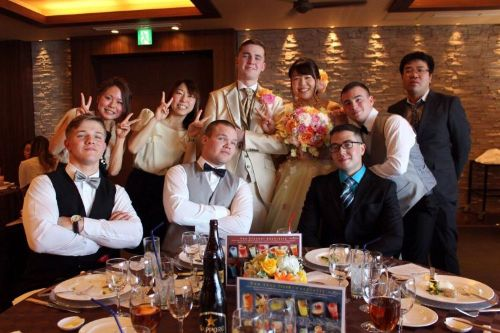

I was born in Sunvalley, Idaho in October of 1996. From there, I was taken to our
family ranch in the Phasimeroi Valley in the center of Idaho. The ranch was about
1300 acres in size and consisted of multiple hay fields, a large pasture, corrals,
and a calving barn. A calving barn is simply a small barn used to help cows give
birth to new calves. Living on a ranch that size involved a lot of playing outside
and a lot of work. I learned how to drive a stick shift truck by the time I was 7
years old. Before that, my dad would put his Dodge Cummins truck in 4-Low and let it
crawl through the pasture while I steered and he threw hay to the cows from the bed.
Eventually I learned to work the clutch and shifter and was able to drive the truck
around the ranch whenever he needed me to. The town I lived in was called May and my
family was half the population of that small town. I was fortunate to grow up the way
I did. I learned the value of hard work and effort. My dad taught me traditional values
that live inside of me to this day. My mom says me and my siblings were 'feral' children
because we had a lack of supervision at the ranch, but fortunately all 8 of us made it
out alive, but not without a few scars. At the age of 9 I had an unfortunate run-in
with a door, that is my sister kicked it and the handle pinched my finger against a
concrete wall, and the top part of my right ring finger was cut off. I also have scars
from dog attacks, cat attacks, and even hitting my head against a rock a time or two.
When I was 11 years old, we sold that house and the land because of my dad's health
concerns. He was type-1 diabetic and was degrading in his health fairly quickly. We
moved to Challis, Idaho which was an hour and a half from the original ranch, but put
us within 15 minutes of my Grandparents, my Dad's mother and father. From that point
on I was raised on a 90 acre ranch. I spent my spare time in all levels of school
wrestling. Once I reached Middle School I added football to my list of activities.
I even attempted to run track at the end of my sophomore year, but a combination of
oversized cleats and a teammate that couldn't seem to put the baton into my hand
properly resulted in a tumble that left my shoulder dislocated with a torn tendon
that would require surgery. None the less I went on to play football just a few months
later. I was a varsity football player and varsity wrestler for the entirety of my
high school career and never attempted any other sports after my track running
incident. That leads me to graduation. I wasn't the most academically proficient
student, but I graduated either way and went on to the next phase of my life.
Immediately upon graduation I moved out of my Dad's house and got an apartment with one
of my older brothers. I also got a job at the same company as that brother making work
commutes easy. I worked at a metal fabrication and powder coating company that built and
delivered products across the United States. We made products such as metal benches, picnic
tables, garbage can covers (like those used at parks), and even dumpsters. The company
also allowed people to bring in products to be sandblasted and powder coated. When I first
started there I was a general worker. I swept floors, cleaned up scrap metal, and from time
to time I got to help the welders with a few projects. I was fortunate to learn how to
operate a break press for bending metal pieces and because of my background on a cattle
ranch I already knew how to weld. I didn't get to do any large welding products because
I was never certified to do so, but they let me help them anyway. For the last month of
my employment there I was moved to the night shift as a sandblaster. That was a fun job.
I got to spend the entire night inside of the sandblasting room in a protective suit shooting
pressurized sand at pieces of metal, such as metal doors, car pieces, and little pieces
used in our own products. While I did enjoy this job I felt like I needed to move onto
something else. I contacted a local Marine Corps recruiter and within a couple of months
I was shipping of to San Diego to become a US Marine. I rode in an airplane for the first
time that I can remember and landed in the San Diego airport. I spent several hours waiting
for a drill instructor to come and get me along with the other hundreds of young men who
were there to become Marines. Finally, the time came and he arrived. We were taken to MCRD
San Diego where we were trained to become Marines. After bootcamp I was shipped to Camp
Pendleton where I underwent Marine Combat Training for a month. Then it was to Fort
Leanordwood to learn how to do my assigned job as a motor vehicle operator. I spent
the first year of my fleet assignment after Fort Leanordwood at Camp Fuji, Japan.
I then spent the last of my time in the Marine Corps in Yuma, Arizona. While in Yuma
I met my wife. We got married shortly after I was discharged from the Marines and
moved back to Challis, Idaho. Back in Challis I began to work as an underground miner
with a couple of my other brothers and a family friend. I learned to operate a jack
leg, an underground loader, a surface loader, and even learned how to use dynamite.
From there I took my wife and young daughter to Idaho Falls, Idaho where I started
college for the first time. At this point I was already 23 years old and most of my
former high school class mates were already finished with their college careers, but
that wasn't going to stop me from going forward with it. I only spent a year in Idaho
Falls before moving back to Yuma so my wife could be closer to her family. I had only
completed one semester at BYU-Idaho at this point. I finished another semester online
before dropping my classes and moving on. In Yuma, I worked as a security officer for
a local casino. While working at the casino my oldest son was born and welcomed into
my young family. My time at the casino was cut short because of an outbreak of Covid
that resulted in the casino shutting down for some time. This put me into a difficult
position and forced me to look for employment elsewhere. That is when I found my current
job that leads me into my most recent phase of life.

For 5 years I dedicated my career to the Arizona Department of Corrections while working
as a Correctional Officer at the Lewis Complex in Buckeye, Arizona and most recently in
the Yuma Complex in San Luis, Arizona. I spent 7 weeks in a training academy for the
Department of Corrections where I learned how to be a Correctional Officer. It may not
have given quite the challenge that Marine Corps bootcamp did, but it was a good experience
that helped me to gain the knowledge I needed to work within an Arizona prison. Once I
completed the academy I was assigned to the Lewis Complex. I spent 5 months working at
the Barchey unit which is a medium custody protective custody unit. I commuted 2 hours
every day to get to the unit, worked 12 hours in the day, then drove the two hours back
home. I was then transferred to the Yuma complex where my commute was shortened to only
20 minutes. I served at the Yuma complex for the next 4 1/2 years. While there I was able
to work at every custody level available at the complex, which are minimum, medium, and
close custodies. I was able to work within a detention unit, or as it's commonly known
'the hole'. I thrived and was well recognized by my supervisors for my hard work and
strong adaptability. I credit both the Marine Corps and my upbringing for my ability to
adapt and put in my best effort. I started attending college again during this time and
completed my Associate's in Computer Science at the end of 2024. I then enrolled with
Grand Canyon University for Software Development. This is where I am currently studying
in hopes to recieve my Bachelor's. In 2024, while living in Yuma and working at the Yuma
complex, I received an upsetting phone call. My Dad, who has battled severe health issues
his whole life, was in the ICU in Salt Lake City. He had been in and out of the hospital
including the ICU many times in his life, but this time was different. I drove the 10
hours to Salt Lake City on my own because my wife was attending my daughter's end of
the year ballet recital. While driving, I decided a prayer would be the best thing I
could do at that time. I still felt as though my Dad would simply get better and go
home as he had done many times in his life, but I prayed anyway. In my lengthy prayer
I told God that if He would be willing to preserve my Dad's life long enough for me to
see him one more time I would be greatful, but I also prayed that if God decided to take
him before I got there I would still be greatful because my Dad would no longer be in pain.
Fast forward a few hours, I was only 10 minutes away from the hospital and I received
the phone call that I never wanted. My brother called with a shaky voice and told me that
my Dad had passed away. He went into cardiac arrest and because of his DNR, they wouldn't
do CPR on him. I immediately fell into deep despair. I had never felt that kind of desperate
pain before. I began yelling and cursing, blaming God for not preserving his life for 10
more minutes and wait for me to get there. After a minute I remembered my prayer and
apologized to God for my outburst, but I couldn't get rid of the desperate pain that
I felt. My eyes were blurry and my mind was racing. My body was shaking and I was afraid
that I was going to crash my car driving 75 miles per hour down the freeway. I prayed
again that God would calm me so I could arrive to the hospital safely. Immediately my
mind was clear, my vision was clear, and my body was still. I didn't feel peace of comfort
only pure focus. As soon as my focus cleared I heard a voice in my head that told me I
would see my Dad before he died. This confused me because there is no reason I should
let a thought like that cross my mind. It's only later that I realized it was the voice
of God that told me I would see my Dad. Within a minute of hearing that voice tell me
I would see my dad once more before his death, my brother called me again. He said, "I
don't know why or how, but Dad is alive." He continued to explain that as they were
mourning over my Dad's body, his heart randomly began beating again, and he began
breathing again. As my brother hung up the phone after telling me to drive safe, I felt
a loving holy presence unlike any I have ever felt before. I began to weep with joy
as I felt God wrap his arms around me in love. I was blessed to be able to spend a day
and half with my Dad before God called him home. I drove the 10 hours home after taking a
day to mourn with my family. I picked up my wife and two children and drove to Idaho for
the funeral. We buried my Dad on my Grandpa's ranch and spent time celebrating the great
life that he lived. A few months later my second son was born. This was a joyous and
concerning time. My youngest son, as we learned shortly later, was born with a very rare
genetic mutation that causes an overgrowth in several limbs and in his brain. He is prone
to seizures and has severe developmental delays. It has been a long process in taking
care of this young man, but I know that God has blessed us with the life of that young man.
We will continue having faithing and trusting in God as we continue forward in this life.